Guía de Trabajo en Grupo
Esta guía detallo los pasos necesarios para configurar y gestionar un proyecto que incluye GitHub, submódulos, y Netlify.
1. Instalación del software necesario
Buscar y descargar el instalador
- Localiza el instalador adecuado:
- Debe ser un archivo
.deb. En este caso, utilizamos la versión135pero la version extensa.
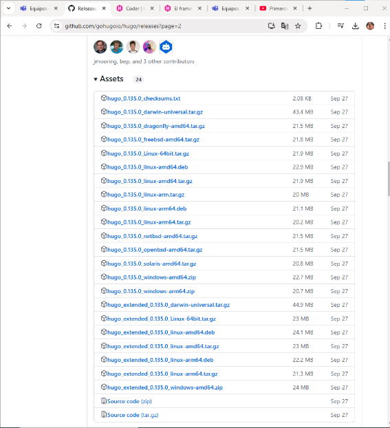
- Descarga e instalación:
- Descarga el instalador.
- Procede a instalarlo en tu sistema.
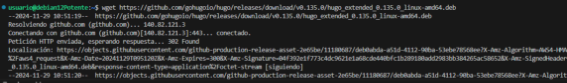 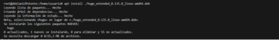
- Verificar la instalación:
- Comprueba la versión instalada ejecutando el siguiente comando:
bash hugo version - Verifica la salida en la terminal.
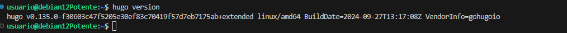
2. Configuración del repositorio en GitHub
Crear y clonar un repositorio
- Crear un repositorio en GitHub:
- Cree uno llamado actividad22_2_ABM, le hice un git init, el git submodule y el echo. Pero posteriormente le cambio a 1
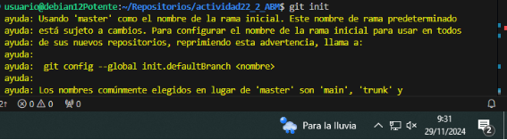 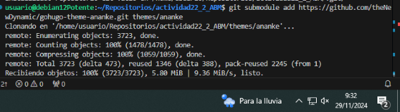 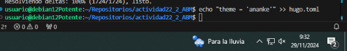
- Creo un post:
- Creo el primero
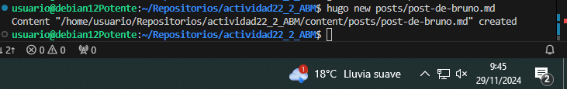
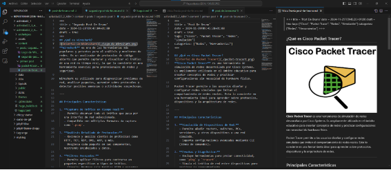
- Creo el segundo 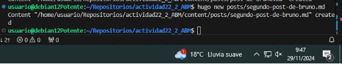
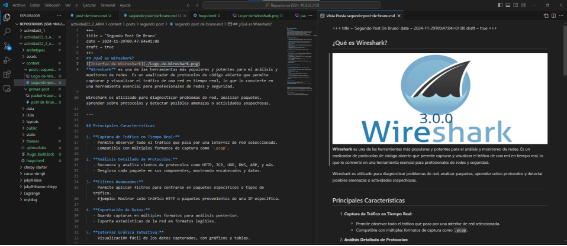
3. Cambiamos las cosas del toml
- Cambiamos esto:
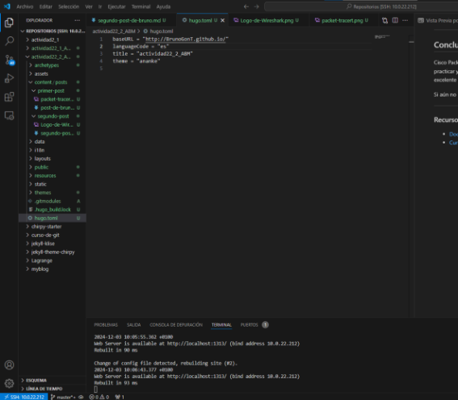
- Creamos el menu: -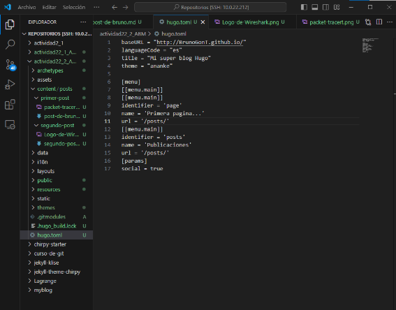
Subimos al Github
- Ponemos los comandos para subirlo:
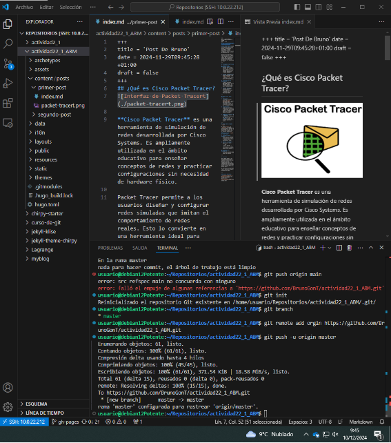
-
Nos metemos al Github y nos vamos a pages 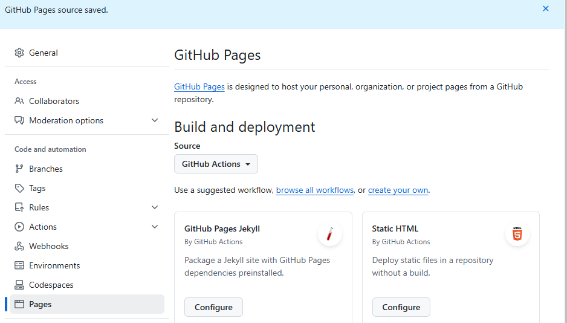
-
Nos metemos en workflows
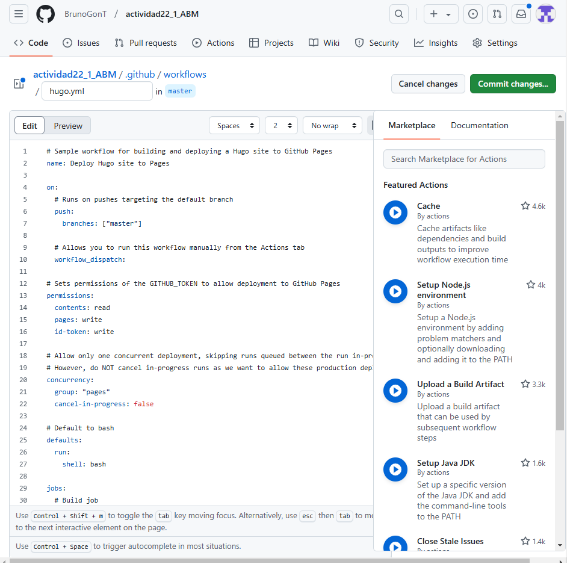
5. Subimos a Netlify
- Nos metemos dentro:
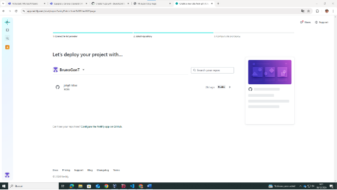 2. Ponemos esto: 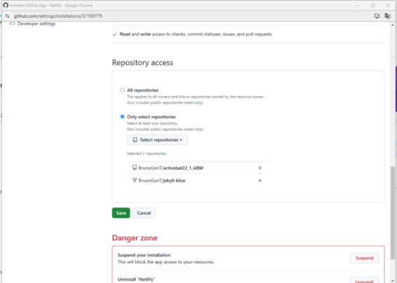 3. Rellenamos mas cosas: 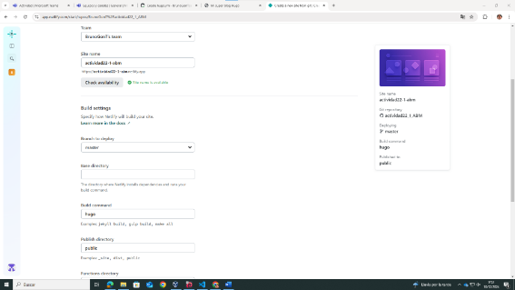 4. Vemos que esta todo bien: 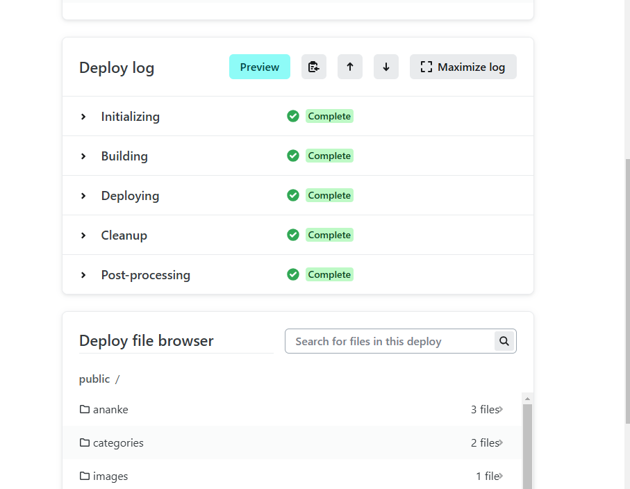 5. Le damos a Open production deploy: 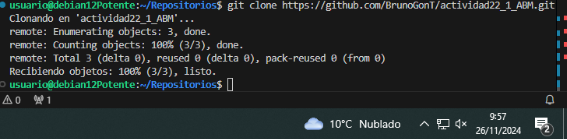 6. Y vemos que esta todo perfecto: 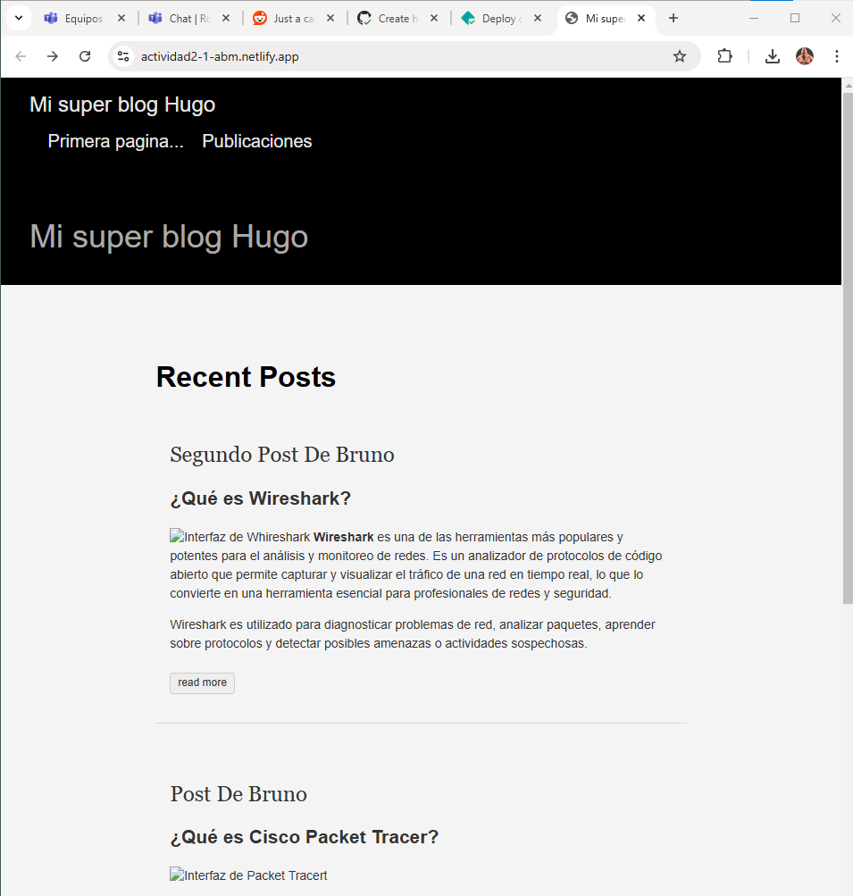